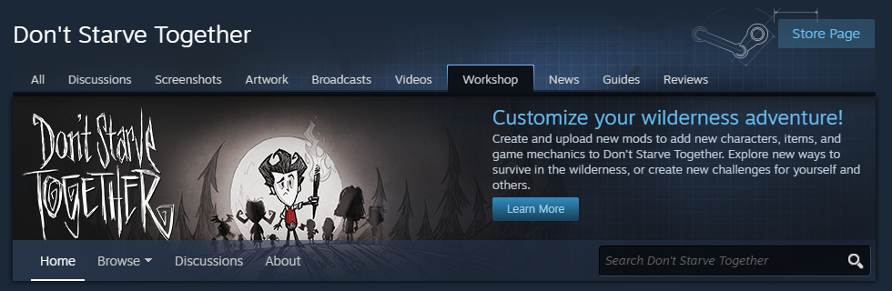

×

Installing DST Mods
Here is how you can download and enable mods for Don't Starve Together.
Option #1
- Go to the mod downloads section of the Klei Forums: https://forums.kleientertainment.com/files/
- Create an account for download privileges.
- Find the mods folder for Don't Starve Together.
- Move the downloaded files here and unzip them.
D:\Steam\steamapps\common\Don't Starve Together\mods
Option #2
- Open the game and go to the mods menu.
- Go to the Get Mods section and click on More Mods.
- This will open the Steam workshop page for Don't Starve Together where you can search for and subscribe to your favorite mods.
- When hosting a server you will need to enable the mods you want active by checking the box in the bottom right of each mod in your list.




Client Mods: Cosmetic mods that run on your machine.
Server Mods: Gameplay-affecting mods that run on the game server.